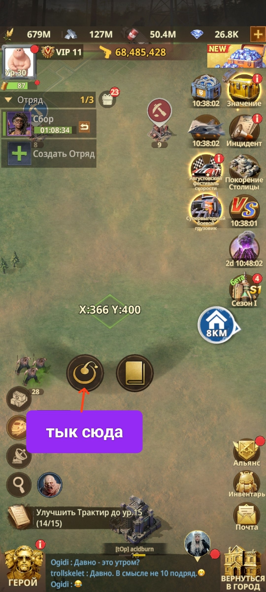
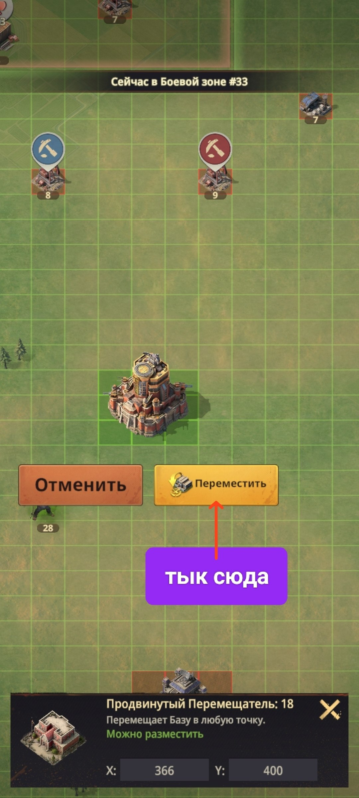
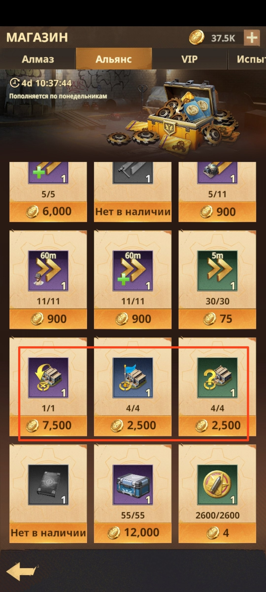
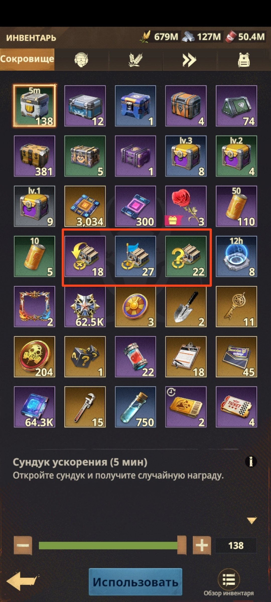
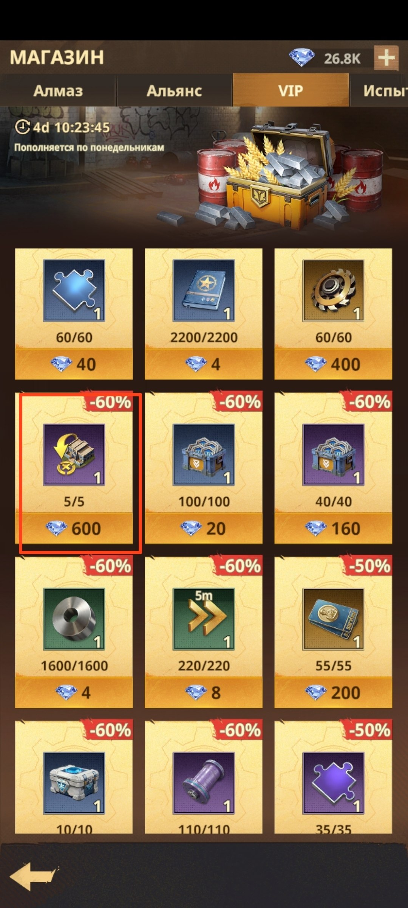

🌀 Телепорты
🌀 ТЕЛЕПОРТЫ Телепорты позволяют моментально переместить вашу Базу на другую территорию своего сервера или на другой сервер, доступный для перемещения. 💳 Покупные телепорты Их можно приобрести в магазинах Альянса и VIP. Доступны три вида: 🟣 Продвинутый телепорт - перемещает Базу в любую выбранную вами точку. 🏠 Релокатор Альянса - перемещает Базу на точку сбора Ассамблеи. ❓ Случайный телепорт - переносит Базу в случайную часть карты. ⚠️ Важно: чтобы сработал любой из этих трёх телепортов, все ваши отряды должны находиться на Базе. 🎁 Бесплатные телепорты Доступны только по субботам: на серверы соперников по VS, в Безумной экспедиции и на территорию события «Вулкан». Также бесплатные телепорты используются в событиях «Пандора» и «Ржавый город».

🌀 Как открыть меню телепортов на карте

📍 Выбор точки для Продвинутого телепорта

🏪 Телепорты в магазине Альянса

🎒 Телепорты в Инвентаре

💎 Продвинутый телепорт в VIP-магазине